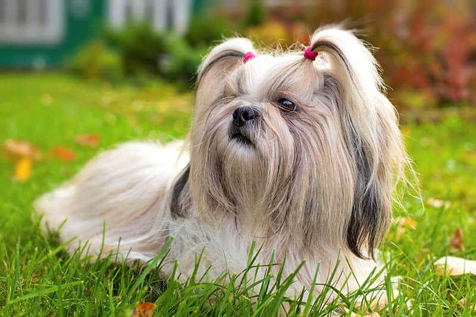
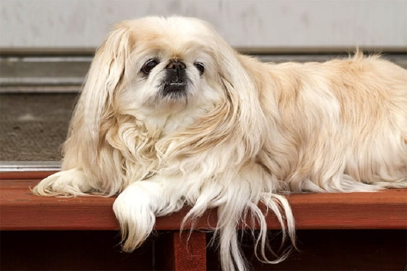
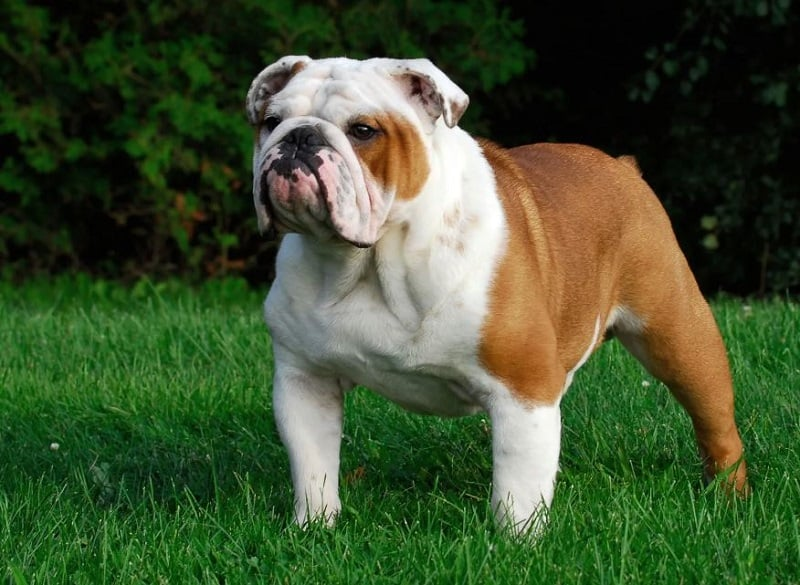
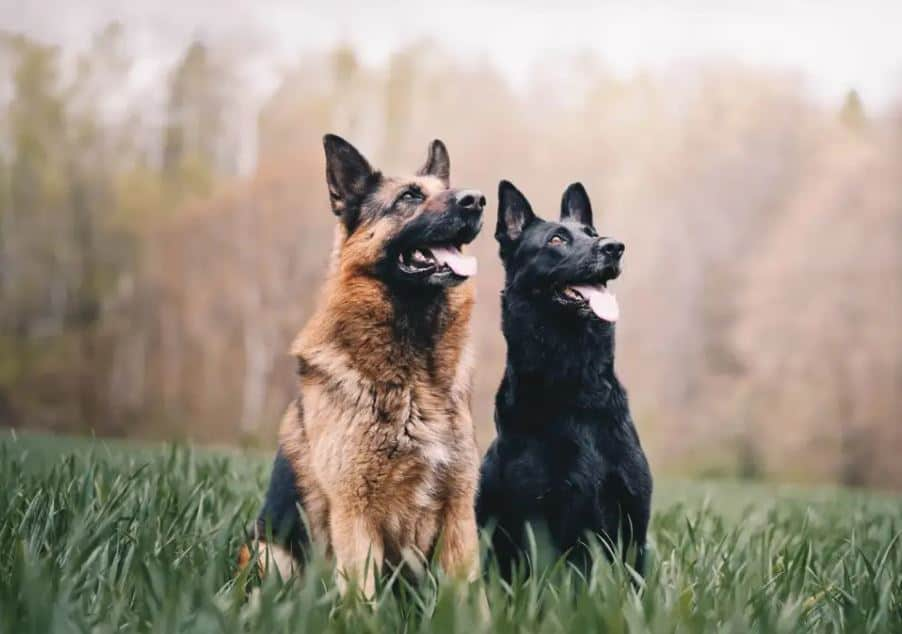
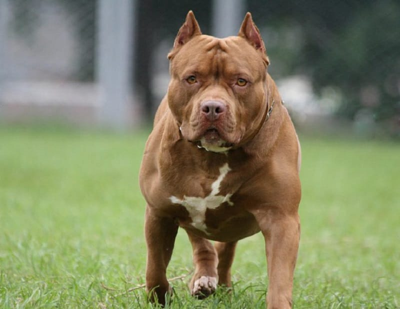
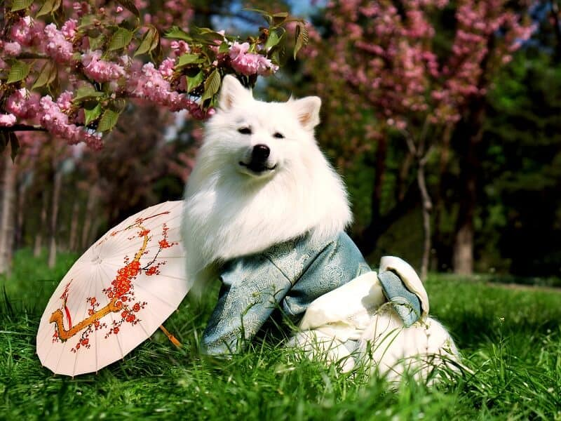
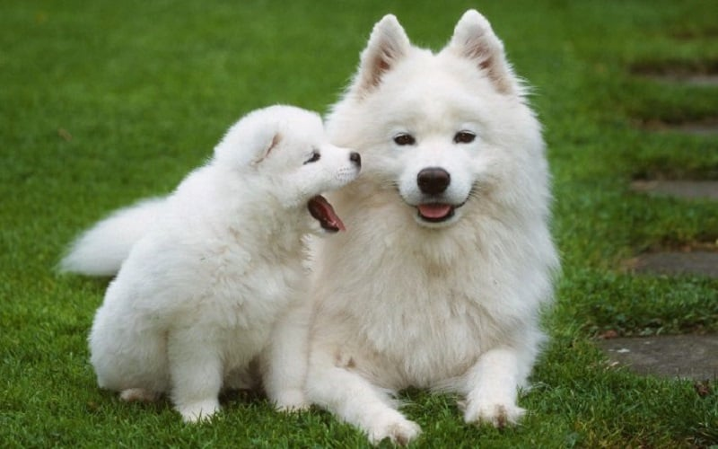
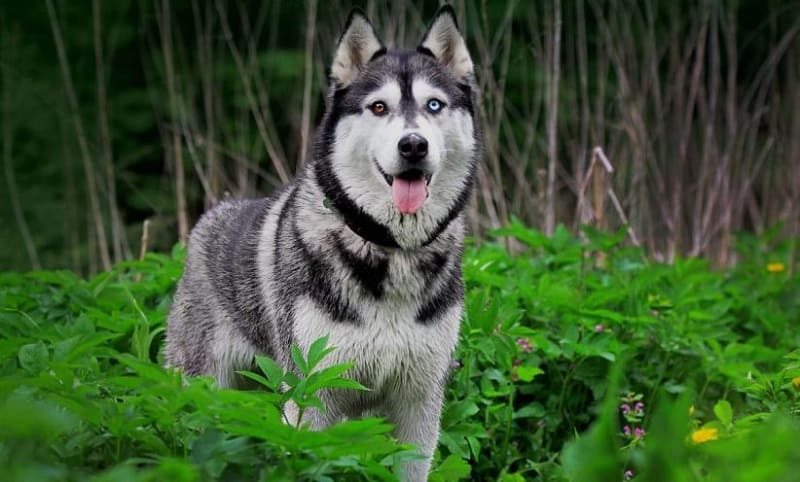

خیلی طبیعیه که در بین انواع نژاد سگ موجود در ایران بعضیها محبوبتر از اون یکیها باشن. اینا هم میتونه دلیل فرهنگی داشته باشه که مربوط به فضاهای نگهداری و شرایط مالی و غیرهست. هم میتونه دلیل نژادی داشته باشه که یکی بهترین نژاد سگ در ایران رو ژرمن شپرد بدونه و یکی پامرانین و … .
قطعاً که سلیقه هم در انتخاب لیست بهترین نژاد سگ خانگی داخلی تاثیرگذاره و خیلیها دنبال یه سگ گارد یا نگهبان قویان و بعضیها یه سگ فانتزی و کوچیک و تعدادی هم میانه رو میگیرن!
خیالت راحت ما این راهو بلدیم و در این مقاله میخوایم نگاهی به ۲۰ نژاد سگ پرطرفدار در سال اخیر بندازیم و با ویژگیهاشون بیشتر آشنا بشیم.
سگهای پرطرفدار چطور انتخاب میشن؟
معمولاً وقتی حضور یه سگ تو یه کشور زیاد به چشم میاد یا موج نگهداری از سگ این مدلی زیاد میشه میگن اون سگ پرطرفداره. البته این تب و تاب ممکنه جهانی باشه و ممکنه هم نباشه. مثلاً تو بعضی از اقلیمهای خیلی سرد یا خیلی گرم نمیشه بعضی از نژادها رو نگه داشت.
پس طبیعیه که سگ های محبوب اون منطقه نژادهای خاصی باشن. تیم پت پرس سعی کرده سگهایی رو که در چند سال اخیر خیلی طرفدار داشتن، براتون لیست کنه.
چطور بهترین نژاد سگ را برای خودم انتخاب کنم؟
نژادهای مختلف سگ تو ایران خیلی زیاده و همین موضوع ممکنه باعث بشه انتخاب برای شما سخت بشه. اما برای اینکه بدونین چه سگی برای شما خوبه و با سبک زندگی شما همخونی داره باید مواردی مثل:
- ویژگی و شخصیت سگ
- جنسیت سگ
- فضای لازم برای نگهداری سگ
- آماده بودن فضای خانه
و کلی فاکتور دیگه رو در نظر بگیرین. اما اصلا نگران نباشین ما این راه بلدیم و به شما توی انتخاب سگی که با سبک زندگی شما مناسبه کمک میکنیم. توی کتاب انتخاب نژاد سگ پت پرس سوالهایی مطرح کردیم، و جواب دادن به اونا به شما میگه که چه نژادی برای شما خوبه.
برای من با علایق، سبک زندگی و شرایط محیط اطرافم چه نژادی از بقیه بهتر و سازگارتره؟ این کتاب به این سوال پاسخ میده. یه تست داره، میزنی و میرسی به بهترین نژادی که برات خوبه و با راهنمایی های بعدی کتاب درباره جنسیت و اسم سگ تصمیم میگیری.
انواع نژاد سگ پاکوتاه موجود در ایران
برخی از بهترین نژاد سگ خانگی در دسته سگ های پاکوتاه قرار میگیرن که معمولاً جثه ریزتری دارن. در بین انواع نژاد سگ موجود در ایران، پاکوتاههای زیر جزو پرطرفدارارترینها برای نگهداری در آپارتمان به حساب میان.
سگ شیتزو ، این بامزه دوست داشتنی
سگ شیتزو با اختلاف زیادی از رقباش توی کشورمون درجه اول محبوبیت رو داره، حتی اگر نژادهایی رو که میکس شیتزو دارن در نظر نگیریم.
معنی اسم نژاد شیتزو، شیر کوچکه ولی این نژاد دوست داشتنی برخلاف اسمش یه عروسکه نه یه شکارچی! سگ شیتزو برای همراهی و همدم بودن ساخته شده و نژادی مهربون، شاد و اجتماعیه که دوست داره دنبال صاحبش راه بیفته و ازاین اتاق به اون اتاق همراهیاش کنه.
سگ شیتزو در مواجه با غریبهها، بچهها و سگهای دیگه خیلی آروم و خوش برخورده و یه سگ خونواده به تمام معناس! برای خانوادههایی که بچه کوچیک دارن به شدت توصیه میشه.
نژاد شیتزو جثه کوچیکی داره و برای زندگی در آپارتمان هم مناسبه. سگ شیتزو انرژی زیادی نداره و یه بار تخلیه انرژی در طول روز به مدت نیم ساعت برای خوش رفتار موندنش کفایت میکنه.

سگ پیکینیز، صورت تخت و بانمک
پیکینیز رو قرنها قبل در چین به وجود آوردن و پرورش دادن تا بتونه همدم خانواده سلطنتی چین باشه. بینی کوتاه، پوزه بسیار تخت و چشمان قلمبه پیکینیزها ظاهرشون رو منحصر به فرد کرده. پیکینیز جزو سگهای براکیوسفال یا پوزه تخته و مشکلات سلامتی اونها رو به همراه داره.
پیکینیزها بسیار باهوشن ولی با هوش زیاد مستقل و کله شق بودن هم همراهه! پس از این نژاد انتظار خوب حرف گوش کردن نداشته باشین.
چشمان بیرون زده هم نژاد پیکینیز رو مستعد مشکلات چشمی کرده و باید چهارچشمی مراقب چشمهاشون باشین. اونا بخاطر پوزه تختشون نمیتونن به خوبی سگهای پوزهدار نفس بکشن و این ویژگی به دمای زیاد و رطوبت بالا حساسشون کرده.

سگ تریر، نژادی که به اشتباه شناخته شده!
چرا اشتباهی؟ با اینکه سگ تریر یکی از محبوبترین و فراوانترین نژاد سگ در ایرانه ولی نژادی که ما به اسم تریر میشناسیم، وجود خارجی نداره!
چرا؟
چون تریر یه اسم کلی برای دستهای از نژاد سگ هست و نژادهای اون دسته، ویژگیهای ظاهری بسیار متفاوتی با همدیگه دارن. سگ تریری که ما در ایران میشناسیم، یه سگ با موهای سفید و کمی فر، جثه متوسط و ظاهر عروسکی هست. شاید بشه گفت از بین سگهای نژاد تریر، به تریر وست هایلند بیشتر شبیه باشه. ولی معمولا سگی که به اسم تریر در ایران شناخته شده میکسی از تریر وست هایلند و نژاد شیتزو هست.
akc.org
برای اینکه با این گروه از سگها بیشتر آشنا بشید بهتون پیشنهاد میکنیم مقاله «سگ تریر» رو حتما حتما مطالعه کنید.
سگ تریر وست هایلند چه ویژگیهایی داره؟
یه سگ شاد و سرگرم کننده با اعتماد به نفسه که خودشو خیلی بزرگ میبینه. غریزه شکار بالایی که داره باعث شده برای نگهداری با جوندگان، خرگوش و پرندگان کوچیک مناسب نباشه.
تریر وست هایلند سگ باهوشیه و به شرطی که جلسات آموزشیتون طولانی و خسته کننده نباشن، آموزش پذیره. پوشش بدنش سفیده و دو لایه است و نیاز به برس کشیدن روزانه داره.
سگ تریر وست هایلند اگر غریبه ببینه یا حس کنه خطر در کمینه شروع به پارس کردن میکنه و میتونه خیلی پر سر و صدا باشه. البته شما میتونین این جور مواقع آموزشش بدین که فقط یک واق بزنه و ساکت بشه.
سگ پامرانین، این کوچولوهای بامزه و بدقلق
پامرانین سگ پاکوتاه ایرانی هاست که این روزها همه جا حضورش به چشم میاد. سگ پامرانین یه سگ کوچولو، زیبا و لوکسه که اجدادش سگهای قطبی بزرگ بودن. همینم باعث شده که تقریباً گرانترین نژاد سگ در ایران هم باشه.
پامرانین کوچکترین عضو خانواده اشپیتزهاست. یه ویژگی خندهدار در مورد پامرها اینه که اونا توی ذهنشون جثه خیلی بزرگی دارن! برای همین ممکنه به سگهای بزرگتر واق واق کنن یا حتی اونها رو تهدید کنن و بهشون دندون نشون بدن. اون به غریبهها حساسه و ممکنه واق واق کردنش اذیت کننده باشه. دادن آموزشهای خونگی مثل جای دستشویی بهشون ممکنه سخت و زمانبر باشه.
سگ پامرانین انرژی زیادی داره و باید حتما حتما روزانه تخلیه انرژی بشه. پوشش بدن پامرانینها ۲ لایه است. لایه زیرین نرم و پف کرده است و بهشون ظاهر منحصر به فردی میده.
یکی دیگه از ویژگیهای ظاهریشون دم برگشته رو به پشت اوناس. برخی افراد پامرانینها رو یک نژاد سگ پاکوتاه میدونن ولی واقعیت اینه که دست و پای پامرانینها نسبت به بدنشون کوتاه نیست و خب این یه تفکر غلط جاافتادهست، برای همین ما اونو تو این بخش لیست قرار دادیم.
شیواوا یا شی هوا هوا سگ خانگی نقلی برای آپارتمان
سگ شیواوا یا شی هوا هوا به لوکس بودن و کوچولو بودن معروفه و بسیار باهوش هم هست.
این نژاد به فعالیت زیادی نیاز نداره و با بدو بدو کردن توی فضای آپارتمان شما و چند بار پیاده روی در هفته نیازش به فعالیت برطرف میشه.
شیواوا یا شی هوا هوا نسبت به بودن کنار افراد غریبه حساس و در ابتدا به اونها بی اعتماده پس در مواجهشون با غریبهها و مخصوصا بچهها مراقب باشید که بهشون پرخاشگری نکنن.
سگ بولداگ، این خرزورِ خرخرو!
سگ بولداگ یا بولداگ انگلیسی به معنای واقعی یه تراکتوره در قالب یه سگ! این سگ بدنی مکعب مستطیل و بسیار سنگین وزن داره که تکون دادنش زور رستم میخواد!
این سگ پاکوتاه ایرانیها رو مجذوب خودش کرده. انواع بولداگ رو میتونین اینور و اونور ببنیین به خصوص فرنچ بولداگ رو. البته از این غافل نشیم که بولداگها به رابطه خوب داشتن با بچهها معروفن و همه میگن برخلاف ظاهر خشنشون قلب مهربونی داره.
پوزه تخت این نژاد باعث میشه موقع نفس کشیدن یه صدای خرخر ریزی از خودش دربیاره و به همین دلیل هم ما اسمش رو گذاشتیم سگ خرخرو!
راستی سگ مشهور کارتون تام و جری هم مثلا نژاد بولداگ بود.

سگ مالتیز؛ سگ آرامش بخش و زیبا
چهره سگ مالتیز با چشمهای درشت و تیره و بینی مشکی شکلاتیش همون چیزیه که میتونه دل بیاحساسترین آدمها رو هم نرم کنه!
سگ مالتیز یک سگ عروسکی ظریفه و در سالهای اخیر نژاد بسیار محبوبی بین ایرانیها بوده.
از نکتههای جالبی که در مورد سگ مالتیز وجود داره اینه که میتونین موهای صاف و بلند اونها رو به شکلهای مختلف و جذاب اصلاح کنین تا ظاهر متفاوت و منحصربفردی داشتهباشن.
سگ پاگ، سگ دلقک و صورت چروک
بین انواع سگ در ایران ، پاگ یکی از متفاوتترینهاست. هر کسی اون رو نمیپسنده و هوادارهای خاص خودش رو داره. بینی گرد و پوزه تخت سگ پاگ و چشم های گرد و درشت و تیره و چروک های روی صورتشون چهره اون ها رو فوق العاده بامزه و منحصر به فرد کرده.
پاگ ها خیلی وقته که به وجود اومدن و در کنار ما آدم ها زندگی میکنن.
تاریخچه اون ها به ۷۰۰ سال قبل از میلاد مسیح برمیگرده که در چین باستان پرورش داده میشدن و توسط امپراطورهای چینی نگهداری میشدن.
سگ پاگ عاشق بچه هاست! طبیعت مهربان و بی آزار این سگ ها باعث شده برای کسانی که بچه کوچیک دارن انتخاب بسیار خوبی باشن. این نژاد خشن نیست و حتی اگر بچه ای موقع بازی باهاش شیطنت کنه هم مهربون باقی میمونه.
انواع نژاد سگ نگهبان موجود در ایران
برای بعضیها بهترین نژاد سگ در ایران اونایی به حساب میان که قدرت بدنی بهتر و توانایی نگهبانی و محافظت داشته باشن. تعدادی از انواع نژاد سگ موجود در ایران سگ گارد محسوب میشن و تعدادی سگ نگهبان. سگهای زیادی در لیست بهترین سگهای نگهبان قرار دارن. برای اینکه باهاشون آشنا بشین میتونین مقاله «بهترین سگهای نگهبان» بخونین.

سگ ژرمن شپرد، باهوش و پر انرژی
سگ خانگی ایرانی باب دل خیلیها ژرمن شپرده. اون نه هیبت ترسناک پیتبول رو داره و نه بیش از حد گوگولی بودن گلدن رو. وقار خاص ژرمن و تواناییهای بینظیرش باعث میشه خیلیها این سگ وفادار رو به عنوان سگ نگهبان انتخاب کنن و آموزش بدن.
سگ ژرمن شپرد یکی از محبوب ترین و شناخته شده ترین نژاد سگ در ایران و جهانه و در جایگاه دوم محبوبیت قرار میگیره.
همون رکس معروف توی اون سریال پلیسی که چند سال پیش از تلوزیون پخش میشد و خیلی طرفدار داشت، یه ژرمن بود. نژاد ژرمن شپرد یکی از قدیمی ترین نژادهاییه که شناخته شده.
اگر پرمشغله هستین و وقت آزاد کمی دارین سگ ژرمن شپرد براتون انتخاب خوبی نیست. چون ژرمنها انرژی ذهنی و بدنی بالایی دارن اگر مدت طولانی تنها بمونن حوصلشون سر میره و عصبی میشن و ممکنه رفتارهای مخرب مثل واق کردن، جویدن وسایل و کندن زمین از خودشون نشون بدن.
از تولگی در اصول تربیت سگ ژرمن کوشا باشین تا تا در بزرگسالی خوش رفتار و اجتماعی بشن. ژرمنها نگهبانهای خوبی هم هستن و با آموزش سگ ژرمن به درستی میشه ازشون یه سگ نگهبان عالی ساخت.
سگ روتوایلر، نگهبانی پرابهت ولی مهربان
سگ روتوایلر جزو نژادهای محبوب برای نگهبانیه و شاید این یکی از مهمترین دلایل محبوبیتش باشه. رتوایلرها سگهایی بزرگ، قوی، پرقدرت و در عین حال رام و مهربان هستن که به عنوان سگ کار در ارتش و پلیس هم خوب عمل کردن.
خیلی مهمه که رتوایلرها رو از بچگی آموزش بدین و اجتماعیشون کنین. اونطوری همیشه یه سگ مهربان و خوش اخلاق رو کنارتون خواهید داشت.
نژاد سگ روتوایلر به اشتباه و ناعادلانه به خطرناک بودن مشهور شده. شاید منطقی باشه که از روتوایلرهای نگهبان و آموزش ندیده بترسیم ولی اگر از نزدیک با یه روتوایلر درست تربیت شده برخورد کنین، تا آخر عمرتون به این نژاد دل میبندین.

سگ دوبرمن پینچر،نژاد تیزهوش و با ابهت
سگ دوبرمن پینچر یکی از نژادهای پرطرفدار توی ایرانه که بیشتر به عنوان سگ نگهبان نگهداری میشه. نگهداری از موهای نژاد دوبرمن پینچر راحته و این سگ ریزش موی زیادی نداره. دوبرمنها برای افراد فعال و ورزشکار سگهای خوبی هستن چون پایه بدو بدو و فعالیتن
ولی حواستون باشه که این نژاد اگر به خوبی تعلیم نبینه و اجتماعی نشه، ممکنه احساس غالب بودن بهش دست بده و اونجاست که زندگی رو به کام صاحبش تلخ میکنه!
البته برخی از سگهای دوبرمن پینچر بعد از مدتی بداخلاق میشن و به مشکل برمیخورن. این سگها ممکنه در برابر سگها و حیوانات دیگه خشونت نشون بدن و در برابر صداهای بلند حساس هستن.

سگ پیت بول، قویترین سگ دنیا!
محبوبترین نژاد سگ به عنوان سگ گارد، پیت بوله. پیتبولها سگهایی بدنامن و خیلی از افراد فکر میکنن اونها خشن هستن!
ولی این شایعهها قدیمی شدن و جالبه بدونین در سال ۲۰۰۷، ۵۱ پیتبول در یک تست مراقبتهای پرستاری شرکت کردن و ۴۸ سگ پیت بول در این تست موفق شدن. در اون سال سگ پیتبول به عنوان همراه و دوست انسانها به دنیا معرفی شد.
با اینکه سگها هرچه بزرگتر باشن، قدرت بدنیشون هم بیشتر میشه ولی عضلات ضخیم و فک قوی سگ پیت بول باعث شده به نسبت وزن و جثهاش، قویترین سگ دنیا لقب بگیره.

سگ اشپیتز ژاپنی، با خصوصیات ظاهری منحصر به فرد
سگ اشپیتز، در ظاهر یه سگ کوچیک و مامانی و پشمالو و در باطن یه سگ نگهبان و پر ابهته! اونا وقتی غریبه ها رو ببین واق واق میکنن و به خونواده هشدار میدن و عاشق محافظت کردن از اعضای خونه هستن.
این سگها به اشتباه اشپیتز نامیده میشن و باید بدونین که مثل تریر یه خانواده از سگها داریم که اشپیتز نامیده میشه. ممکنه وقتی یه سگ اشپیتز دیدین یاد نژاد پامرانین یا ساموید بیفتین. با اینکه ظاهر این ۳ تا نژاد به هم شبیهه ولی اندازشون خیلی متفاوته!
سگ اشپیتز بسیار باهوشه، آموزش بهش راحته و با بچهها رابطه فوق العاده خوبی داره. اگر تخلیه انرژی روزانه رو براش انجام بدین و ازش به خوبی نگهداری کنین، شاد و سرحاله و صاحبش رو هم سرحال میاره.
۴ نژاد متفاوت و محبوب توی ایران
یه سری نژادهای دیگه هم هستن که جزو دستههای قبلی محسوب نمیشن و اما جزو محبوبترین نژادها در ایران هستن.
سگ چاو چاو، سگی شبیه به شیر با زبان آبی!
سگ چاوچاو نژادیه که بخاطر ظاهر جالب و منحصر به فردش که ما رو یاد شیرها میندازه معروف شده. البته چاوچاو علاوه بر ظاهر زیباش ویژگیهای شخصیتی فوق العادهای هم داره که بهتره اونا رو نادید نگیریم.
چاو چاوها سگهایی وفادار، باوقار و کمی گوشه گیر هستن که طبیعتی مستقل دارن.
برخی افراد معتقدن ویژگیهای اخلاقی سگ چاو چاو کمی شبیه گربههاست، در صورتی که خیلی از صاحبان چاوچاوها گفتن این نژاد با فردی که بیشترین مراقبت رو ازش به عمل میاره، پیوندی جدانشدنی برقرار میکنن.

سگ ساموید، نژاد مورد علاقه خودم!
سگ ساموید یکی از زیباترین سگهای دنیاست و چهرهاش جوریه که انگار داره به ما لبخند میزنه. این سگ بزرگ و پشمالو با موهای یکدست سفید و نرمش، نژاد سگ مورد علاقه منه.
البته این چهره خندون خیلی خوب شخصیت سامویدها رو که ذاتا سگهایی خوشحال، خوش ذات و خوشبین هستن نشون میده.
علاقه زیاد سامویدها به انسان هم احتمالا از رابطه نزدیک جد در جد اونها با مردم منطقه سامویده که این نژاد سگ رو هزاران سال پرورش دادن و تکثیر کردن منشاء گرفته.

سگ هاسکی، زیبای مهار نشدنی
برای بعضیها بهترین سگ خانگی در ایران هاسکیه. سگ هاسکی یا سیبرین یه سگ بسیار زیباست که با ظاهر منحصر به فرد گرگ مانند و چشمهای آبیاش شناخته میشه. از روی پوشش بدن ضخیم و ۲ لایه اش میشه فهمید که نژاد هاسکی از جاهای سرد منشاء گرفته.
اگه بخوایم سگ هاسکی رو توی ۳ تا کلمه خلاصه کنیم باید بگیم پر انرژی و مستقل و محبوبترین نژاد سگ در ایران. هاسکیها به شدت نژاد بیش فعالی هستن و برای اینکه بدرفتار نشن باید تخلیه انرژی انجام دادن رو در موردشون جدی بگیرین.
برای نگهبانی مناسب نیستن چون رغبتی ندارن با دیدن آدمهای غریبه پارس کنن! کلا هاسکیها کم واق واق میکنن ولی عاشق زوزه کشیدنن.
وای که چقد این نژاد زیبا، خرابکاره. یه سگ هاسکی میتونه وقتی تنهاس، به راحتی یه خونه رو بهم بریزه و خراب کنه! ریزش موی هاسکیها هم بسیار زیاده.
اگر سگ هاسکی دوست دارین، دست نگه دارین! این نژاد برای هر کسی مناسب نیست.
پیشنهاد مجله اینترنتی پت پُرس:
در صورتی هاسکی بگیرین که سابقه سگ نگه داشتن رو داشته باشین! این نژاد نیاز به صاحبی داره که باهاش خیلی قاطع برخورد کنه، وقت آزاد زیادی داشته باشه و آموزشش رو جدی بگیره.
سگ گلدن رتریور، خوش اخلاق و همیشه خندان
سگ گلدن رتریور یکی از محبوبترین نژادها در کل دنیاس. بخاطر خوش اخلاق و مهربون بودن و تحمل بالایی که داره، سگ خانواده فوق العادهای هست.
گلدن رتریور نژادی زیبا، اجتماعی، وفادار، مهربون و خیلی باهوشن. اونا بهترین نژاد سگ خانگی هستن یعنی دوست دارن در همه فعالیت ها با صاحبشون همراه باشن.
اگه یه گلدن رتریور گرفتین، آماده باشین همه جای خونه تو دست و پا ولو باشه!
انواع سگ نژاد ایرانی محبوب
شاید بهتره بگیم بین انواع نژاد سگ موجود در ایران، سگهای بومی بهترین انتخاب محسوب میشن چون با شرایط آبوهوایی و زیستی اون منطقه سازگارترن و بیشتر عمر میکنن.
سگ سرابی، ایرانی الاصل و کمی ترسناک!
با اینکه سگ سرابی یک نژاد ایرانی هست ولی تاریخچهای اصیل داره. این سگها جثهای فوق العاده بزرگ و ظاهری خشن دارن که شاید در نگاه اول بترسونتتون. محبوبیتشون بخاطر نگهبان بودن اونهاست. متاسفانه برخی از سودجویان از این نژاد در جنگ انداختن سگها استفاده میکنن.
بنابراین بهترین نژاد سگ خانگی برای افرادی که خارج از شهر زندگی میکنن، این سگ اصیله.
در بین سگهای ایرانی، سرابی از همه محبوبتره!
dogbreedsfaq

قیمت هر کدوم از انواع نژاد سگ در ایران چنده؟
بسته به نوسانات بازار و این که چقدر امکان پرورش و زادوولد اون نژاد در اقلیم ما فراهم باشه، این قیمت بالا و پایین میشه. برخی از نژادها مثل پامرانین و تریر تو بازه قیمتی ۴۰ تا ۵۰ میلیون (در سال ۱۴۰۲) قرار دارن و برخی مثل رتوایلر و گلدن رتریور ۱۰ الی ۲۵ میلیون (در سال ۱۴۰۲) قرار دارن.
تو ویدئوی زیر حدود قیمت سگهای انواع نژاد سگ موجود در ایران که جزو محبوبترینها حساب میشن رو براتون آوردیم.
جمعبندی
بهترین نژاد سگ در ایران منحصر به سگهای متنوع میشه از سگهای پاکوتاه گرفته تا سگهای دسته شکاری. پس شما برای انتخاب بهترین نژاد سگ خانگی دستتون بازه و میتونین از انواع نژاد سگ موجود در ایران که جزو لیست محبوبترینها هم باشن، یکی رو بسته به سبک زندگی و سلیقه و شرایط خودتون انتخاب کنین.
مهم اینه که بدونین تو این مسیر تیم پت پرس همراهتونه و جای هیچ نگرانیای نیست!


گلدن تو ایران پیدا میشه ؟
بله
سلام میخواستم بپرسم سگ ساموید واسه ی آپارتمان مناسبه چونکه من عاشق این نژاد هستم
سلام آریا جان
تقریبا میشه گفت مناسب آپارتمان نیس چون نیاز به فعایت بدنی خیلی زیادی داره,گرما رو نمیتونه تحمل کنه,زیاد پارس میکنه و علاقه ای به تنها موندن نداره.
برای اینکه با خصوصیات این نژاد بیشتر آشنا بشی میتونی مقاله مربوط به ساموید رو بخونی.
سلام من یک سگه سرابی دارم میخواستم بدونم برای اموزش هوشش خوبه یا عوضش کنم
سلام محمد رضا جان
هر سگی با هر نژادی توانایی یاد گرفتن هر نوع آموزشی رو داره,بغضی از نژاد ها زودتر یاد میگیرن و بعضی دیرتر,کافیه با صبر و حوصله با سگت تمرین کنی تا شاهد نتیجه های عالی در آینده باشی.
سلام من میخوام یک سگ پاکوتاه مو بلند بخرم باید ازکجا بخرم ومیخوامخودمم تربیتش کنم لطفا راهنماییم کنید.
سلام آقای خسروی عزیز
در مورد سگ های پا کوتاه و انواعشون میتونید این مقالمون رو مطالعه کنید: ۵ نژاد سگ پا کوتاه خانگی اما درمورد محل خریدش متاسفانه اطلاعاتی نداریم.
برای تربیت سگ قشنگتون میتونید از کتاب های تربیت سگ پت پرس استفاده کنید تا با خیال راحت از ۰ تا ۱۰۰ آموزشش رو خودتون انجام بدید.
سلام خسته نباشید .. من یه سگ میخوام بخرم مامانم موافقه .. من چون تو آپارتمان زندگی میکنم مامانم میگه یه سگ آروم مثل سگ سالی تاک باشه که همش یه جا نشسته و آروم باشه… شما میدونید نژاد سگ سالی تاک یا سالومه چیه ؟ میشه بهم بگید؟ ممنون میشم
سلام ساناز جان
سگ سالومه نژاد شی هوا هوا هس اما اون سن بالایی داره و به خاط همین معمولا خواب و آروم هس.
سگ ها خصوصا توی دوران تولگی شیطنت بیشتری دارن و باید آمادگی کنار اومدن با این مسئله رو داشته باشید.
برای آشنایی بیشتر با این نژاد هم میتونی مقاله ی تربیت سگ شی هوا هوا رو مطالعه کنی.
سلام خانم حمزه ،من چند روز پیش دوستم یک سگی رو آورد تو خونه باغ ما بعد گفت چند روز دست شما باشه من میام میبرمش
بعد میخواستم فقط بدونم میتونید نژاد سگو اگر بهتون مشخصاتشو بدم برام پیدا کنید؟
سلام علی جان
برای تعیین نژاد ما یه بخش ویژه داریم که میتونی عکس سگت رو برامون ارسال کنی و نتیجه دقیق رو بدونی. از لینکی که برات میذارم استفاده کن:
تعیین نژاد سگ از روی عکس
سلام
من بین سگ ساموید و پامرانین و گلدن رتریور موندم که کدوم و انتخواب کنم
من در مشهد زندگی میکنم
و ادم کم صبری هستم
و یه خواهر کوچک دادم
به نظر شما چه سگی مناسب من است ؟
سلام یاسمن عزیز
با این شرایطی که گفتی گلدن رتریور انتخاب بهتریه برات. اما دقت کن که نیاز به فعالیت روزانه ی نسبتا زیادی داره
سلام من یک تجربه درباره ی سه سگ وست هایلند تریر دارم میخوام بهتون بگم شاید از این نژاد بیشتر خوشتون بیاد:دایی من سه تا سگ وست هایلند تریر به اسم های فلفل(نر)تیدا و پانی(ماده)هستند من از پانی میترسم چون یکم زیادی بزرگه ولی جالب اینه که بدونید این نژاد نه تنها با صاحب خودش مهربونه بلکه با کسانی که باهاشون بازی کنه و غذا بده و… هم فوقالعاده مهربونه(البته اگه اجتماعی بشه)من اینو از اینجا فهمیدم که روز اولی که داییم تیدا رو اورد خونشون باهاش بازی کردم بعد الان هروقت میرم خونه ی داییم میاد پیشم همینطور فلفل به اون هم غذا دادم و بازی کردم الان این دو تا باهام خیلی مهربونن ولی چون از پانی میترسیدم اصلا باهاش خوب نبودم و همیشه از دستش فرار میکردم این کارم باعث شد یه بار پانی منو گاز بگیره ولی بعد از چند وقت با پانی هم بازی کردم الان دیگه اون هم باهام خوب شده وقتی هم که یک غریبه بیاد توی خونه ی داییم هرسه تا شروع کردن به پارس کردن ولی بعد از چند دقیقه پسر داییم گفت ساکت اونا هم ساکت شدن. من این خاطره ای که گفتم میخواستم به شما اینو بفهمونم که این سگها فوق العاده برای نگهبانی خوب هستند و همینطور خیلی مهربونن و نباید هیچوقت باهاشون بد اخلاقی بشه چون آخرش یه بلایی سرت میارن و همیشه باید با لطافت باهاشون برخورد بشه من این تجربه رو موقعی کسب کردم که فکر میکردم چون پانی بزرگه وحشی و بد اخلاق هم هست ولی اشتباه میکردم به نظر من هیچوقت از ظاهر سگی فکر نکنید که اون سگ وحشیه باید اول متوجه اخلاق و رفتارش بشید.ولی سریعا هم به سگی نزدیک نشید چون بهتون حمله میکنن.
امیدوارم حرف من بدردتون بخوره در آینده
و یه نکته دیگه درباره ی نژاد وست هایلند تریر اینه که باید هرروز موهاشون رو شونه کنید چون این نژاد،از نژاد سگ های مو بلند است و ممکنه حتی اگه یه روز هم موهاشون رو شونه نکنین موهاشون توی هم دیگه گره بخوره و موقع شونه کردن در روز بعد اذیت بشن پس برای داشتن این نژاد باید وقت آزاد زیادی داسته باشین(البته دایی من وقت نداره و همینطور زنداییم بجاش پسداییهام هرروز با اونا یه عالمه بازی میکنن بعضی وقتا هم منو پسر خالم با اونها بازی میکنیم.
سلام و عرض خسته نباشید
من بین دو سگ موندم کلی هم روشون مطالعه کردم
اولی ژرمن شپرد شوالین هست که بخاطر باهوش بودن و زیبایش می خوام
دومی هم روتوایلر هست که بخاطر پر اُبهتی و اعتماد به نفس بالا و قوی بودنش می خوام
می شه بگید کدوم رو بهتره من بگیرم
و لطفا بگید کدوم فروشگاه معتبر تره و می تونیم به اون ها اعتماد کنیم ممنون
سلام آراز عزیز
اینکه چه سگی بهتره کاملا به شرایط شما و توقعتون از یه سگ بستگی داره وگرنه تمام حیوانات خوب هستند و نمیشه گفت کی بهتره.
اگر میخواید سگ نگهبان و گارد تربیت کنید بهتره روتوایلر رو انتخاب کنید اما اگر صرفا میخواید از هوش بالا و زیبایی اون لذت ببرید و کارهای نمایشی باهاش انجام بدید شولاین انتخاب مناسب تریه
درمورد فروشگاه هم ما اطلاعی در این زمینه نداریم
سلام من می خواهم در باغ دوسگ نگه دارم سگ های ساموید و هاسکی انتخاب خوبی هستن
سلام امیرعلی جان
بهتره درمورد سگ های دیگه هم فکر کنی. چون این دو نژاد به شرایط خاصی احتیاج دارن. به مقاله ی بهترین سگ های نگهبان مراجعه کن